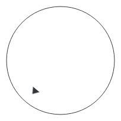

Dial QML Type
Circular dial that is rotated to set a value. More...
| Import Statement: | import QtQuick.Controls 2.5 |
| Since: | Qt 5.7 |
| Inherits: |
Properties
- angle : real
- from : real
- handle : Item
- inputMode : enumeration
- live : bool
- position : real
- pressed : bool
- snapMode : enumeration
- stepSize : real
- to : real
- value : real
- wrap : bool
Signals
- moved()
Methods
Detailed Description
The Dial is similar to a traditional dial knob that is found on devices such as stereos or industrial equipment. It allows the user to specify a value within a range.

The value of the dial is set with the value property. The range is set with the from and to properties. To enable or disable wrapping, use the wrap property.
The dial can be manipulated with a keyboard. It supports the following actions:
| Action | Key |
|---|---|
| Decrease value by stepSize | Qt.Key_Left |
| Decrease value by stepSize | Qt.Key_Down |
| Set value to from | Qt.Key_Home |
| Increase value by stepSize | Qt.Key_Right |
| Increase value by stepSize | Qt.Key_Up |
| Set value to to | Qt.Key_End |
Dial supports three input modes: Dial.Circular, Dial.Horizontal and Dial.Vertical. The circular input mode operates on an absolute input system, where the position of the cursor within the dial directly reflects its value. The horizontal and vertical input modes use a relative input system, where changes in the cursor's position are "added" to the value of the dial.
The following image illustrates the directions in which the various input modes track movement:
See also Customizing Dial and Input Controls.
Property Documentation
[read-only] angle : real |
This property holds the angle of the handle.
The range is from -140 degrees to 140 degrees.
See also position.
from : real |
handle : Item |
This property holds the handle of the dial.
The handle acts as a visual indicator of the position of the dial.
See also Customizing Dial.
inputMode : enumeration |
This property holds the input mode.
Dial supports three input modes: Dial.Circular, Dial.Horizontal and Dial.Vertical. The circular input mode operates on an absolute input system, where the position of the cursor within the dial directly reflects its value. The horizontal and vertical input modes use a relative input system, where changes in the cursor's position are "added" to the value of the dial.
The following image illustrates the directions in which the various input modes track movement:
The default value is Dial.Circular.
This property was introduced in QtQuick.Controls 2.5 (Qt 5.12).
live : bool |
[read-only] position : real |
pressed : bool |
This property holds whether the dial is pressed.
The dial will be pressed when either the mouse is pressed over it, or a key such as Qt.Key_Left is held down. If you'd prefer not to have the dial be pressed upon key presses (due to styling reasons, for example), you can use the Keys attached property:
Dial {
Keys.onLeftPressed: {}
}
This will result in pressed only being true upon mouse presses.
snapMode : enumeration |
This property holds the snap mode.
The snap mode works with the stepSize to allow the handle to snap to certain points along the dial.
Possible values:
| Constant | Description |
|---|---|
Dial.NoSnap | The dial does not snap (default). |
Dial.SnapAlways | The dial snaps while the handle is dragged. |
Dial.SnapOnRelease | The dial does not snap while being dragged, but only after the handle is released. |
See also stepSize.
stepSize : real |
This property holds the step size.
The step size determines the amount by which the dial's value is increased and decreased when interacted with via the keyboard. For example, a step size of 0.2, will result in the dial's value increasing and decreasing in increments of 0.2.
The step size is only respected for touch and mouse interaction when snapMode is set to a value other than Dial.NoSnap.
The default value is 0.0, which results in an effective step size of 0.1 for keyboard interaction.
See also snapMode, increase(), and decrease().
to : real |
value : real |
wrap : bool |
This property holds whether the dial wraps when dragged.
For example, when this property is set to true, dragging the dial past the to position will result in the handle being positioned at the from position, and vice versa:
When this property is false, it's not possible to drag the dial across the from and to values.
The default value is false.
Signal Documentation
This signal is emitted when the dial has been interactively moved by the user by either touch, mouse, or keys.
This signal was introduced in QtQuick.Controls 2.2 (Qt 5.9).